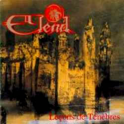

No ano de 1993, os músicos Iskandar Hasnawi
e Renaud Tschirner deram início a um projeto que trazia
a combinação de elementos da música clássica
e eletrônica, com violinos, vozes e sintetizadores, entre
outros; criando assim uma sonoridade obscura que pode ser classificada
como Dark Ambient ou Dark Atmospheric.
No ano seguinte, a dupla convidou a vocalista
Eve-Gabrielle a participar do projeto, que naquele momento já
havia recebido o nome Elend. Assim, o trio preparava-se
para a elaboração do primeiro trabalho. No mesmo
ano, foi produzido e lançado pela gravadora francesa Holy
Records o Leçons de Ténèbres.
Este álbum traz nove faixas e estende-se por mais de 56
minutos e é o primeiro da trilogia intitulada Officium
Tenebrarum. Algumas músicas trazem citações
de Paradise Lost do escritor francês John Milton
e atribuem um caráter místico a este álbum
de estréia.
Em
abril de 1995, o Elend fez sua primeira apresentação
pública em um festival na cidade de Reims (França)
e em seguida passou a contar com a soprano Nathalie Barbary na
formação oficial. Em março de 1996, foi lançado
o segundo trabalho: Les Ténèbres du Dehors (Officium
Tenebrarum II). Este álbum, gravado também
pela Holy Records, foi lançado em duas versões (com
apenas uma música acrescentada em relação
à primeira versão) e traz Ethereal Journey
como um dos destaques, com mais de 14 minutos de duração.
A ótima recepção que a banda havia obtido
com os primeiros lançamentos, despertou o interesse da
gravadora Music for Nations. Assim, foi registrado um
contrato de quatro álbuns.
Entretanto, em junho de 1997, foi lançado
um álbum independente da série Officium Tenebrarum,
ainda pela Holy Records, denominado Weeping Nights, contendo
algumas faixas inéditas (como O Solitude e The
Embrace) e outras que já compunham os discos anteriores
(como The Luciferian Revolution e Nocturne).
Neste mesmo ano, Sébastien Roland passou a integrar a formação
da banda como tecladista. Em setembro de 1997, iniciaram-se as
gravações para o próximo trabalho.
The Umbersun (Officium Tenebrarum III),
gravado em Londres e lançado em 1998, mantém a linha
de vocalizações e instrumentação clássica
que produz atmosferas dramáticas e intensas, com letras
em hebraico, latim e inglês. A gravação de
The Umbersun contou com a participação
da Joyful Company of Singers (um coro inglês composto
por mais de trinta vozes) e produção de Dominique
Brethes e Damian Taylor.
O lançamento de The Umbersun
completa a trilogia da série Officium Tenebrarum,
que é uma antiga tradição cristã celebrada
na semana de Páscoa pelos primeiros cristãos de
Roma. A liturgia foi retomada e se popularizou na França
do século XVII.
Após este lançamento, os integrantes
do Elend passaram a dedicar-se a projetos paralelos; entretanto,
sem que houvesse um distanciamento entre si e com a proposta musical
da banda. O reencontro ocorreu apenas em 2002.
Já em 2003, foi lançado Winds
Devouring Men (Winds Cicle I) que marcou o ressurgimento
do Elend no cenário musical e o início de uma nova
seqüência de álbuns conceituais. Este trabalho
trouxe mudanças significativas em relação
aos discos anteriores. Winds Devouring Men expõe
uma qualidade musical muito superior e soa muito mais intimista
e melancólico. Um exemplo é a segunda faixa, Worn
Out With Dreams, que se desenvolve com suavidade sobre um
violão, vozes e teclados. Aqueles ouvintes que se acostumaram
às sonoridades dramáticas, intensas e violentas
dos álbuns anteriores, certamente, notaram a reformulação
da proposta musical do Elend.
A partir de setembro de 2004, a discografia do
Elend passou a contar com mais um trabalho. Sunwar the Dead
(Winds Cicle II) traz onze faixas que resgatam a agressividade
e dramaticidade dos discos que compõem a trilogia Officium
Tenebrarum. Este trabalho traz em sua orquestração
uma rica produção sinfônica com mais de cinqüenta
músicos. As letras fazem referência aos antigos autores
e pensadores gregos como um longo e profundo épico musical.
No ano de 2005, a banda concedeu várias
entrevistas à imprensa especializada e comprovou a popularidade
e o respeito que vinha conquistando nos últimos anos. Em
outubro, foi anunciado o término das gravações
do sétimo álbum. O ano de 2006 foi ocupado quase
que totalmente com o processo de finalização deste
trabalho.
Finalmente, após sucessivos adiamentos,
foi lançado em fevereiro de 2007 o álbum A World
in Their Screams (Winds Cicle III). Este álbum, o
sétimo da carreira e o que finaliza a trilogia Winds
Cicle, traz onze faixas com um maior volume de elementos
eletrônicos e orquestrais. A World in Their Screams
é considerado pela própria banda o trabalho mais
obscuro, denso e sufocante de sua discografia.
Após quinze anos de carreira e sete álbuns
lançados, a banda franco-austríaca concretizou-se
como uma das mais sólidas referências de seu segmento.
Sem restringir-se à classificações como Dark
Ambient, Neo-classical ou qualquer outra denominação
superficial, o Elend auto-justifica sua notoriedade por músicas
e álbuns que não são apenas uma união
e uma combinação de sonoridades; mas, principalmente,
por trabalhos que buscam, com profundidade, referências
históricas e despertam no ouvinte sentimentos adormecidos
na alma.
Por
Spectrum